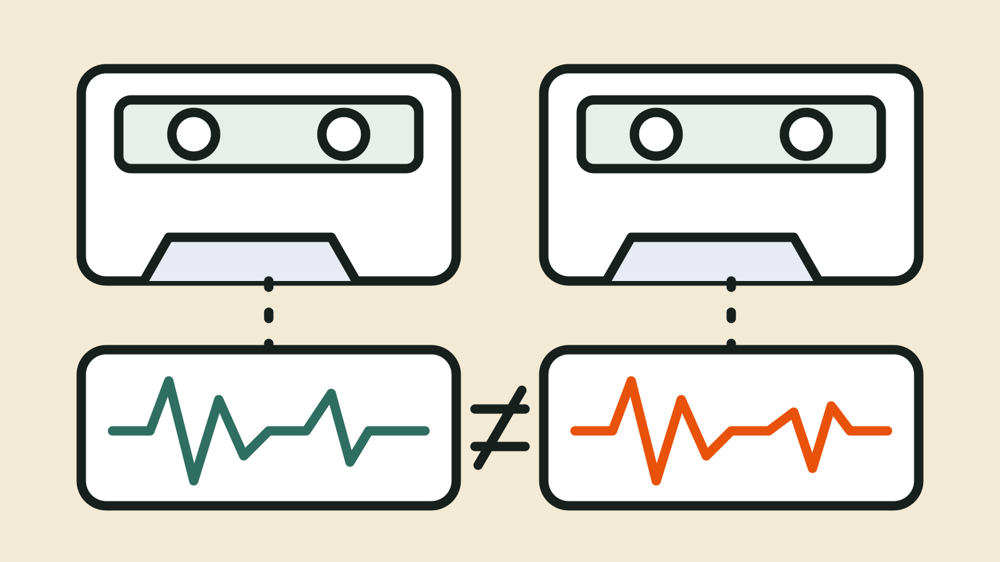

Blog
Same FASTQs, different variants: where it creeps in
Imagine you run the same FASTQ files through the same pipeline twice, maybe once on a laptop and once on a cluster, and the two VCFs are not identical. Did something break? Not necessarily, and not necessarily in the way you fear. This post collects what published studies report about where differences can come from, suggests a way to isolate the stage that changed, and lists what to write down so the next difference can be explained. We are cautious throughout: several of these effects depend on the tools, versions and data, and we have measured none of them ourselves.

First, ask what "same" means
Before looking for randomness, check the boring explanations. Were the FASTQ files byte-identical? Were the reference genome and annotation the same files? Were the tool versions, and the containers or conda environments, the same? Were parameters set on the command line in one run and in a config file in the other? Each of those is a recorded fact that a run could carry, and a mismatch there may be a more likely story than a deep property of an aligner. We have no numbers on this, so treat it as our impression and not a finding.
What the studies report
Three papers are useful because they look at different layers.
Read order. Firtina and Alkan reanalysed the same sequencing datasets with the same tools and parameters, changing only the order of reads in the FASTQ files. Reads from repetitive regions were mapped to different locations in the second alignment. Splitting reads into chunks for parallel mapping, without shuffling, produced similar effects.[1] The same abstract reports that, even with an identical alignment, GATK's HaplotypeCaller gave slightly different call sets, which they traced to the variant filtration step. They conclude that each step should handle ambiguous mappings deterministically.[1]
Threads and repeats. Sandmann and colleagues evaluated eight variant callers on targeted sequencing data. When they ran the same dataset twice with the same settings, most tools gave identical results, and the exception was VarDict, whose differences were in indels; the authors suspect a non-deterministic step in its local realignment. For the three tools that offer multithreading (GATK, Platypus and LoFreq), a single-thread and an eight-thread run differed. GATK showed the largest differences, and did not produce an exactly identical output for a single sample.[2] That is one study, on one kind of data, with the versions of its day, so we would not generalise it. It is, though, a reason to test thread counts on your own data before assuming they do not matter.
Environment. A 2025 study had eleven student groups build somatic variant-calling pipelines on the same benchmark dataset. The authors report that operating system and installation method were the most influential factors in variant-calling performance, and that identical library versions and parameters still gave divergent results. [3] We read this as an observational pattern across eleven student groups. We did not see the authors claim to have established cause, so we treat it as a hint that "same tools" can hide differences, not as a verdict on any setup.
Order and ties inside the pipeline
Sorting is another place to wonder. The samtools documentation says default sort order is by reference, then position, then the reverse-strand flag, and it spells out how ties are resolved for name sorting.[4] It does not say, on the page we read, how reads that tie on all of those are ordered, or whether multithreaded sorting changes anything. We do not know whether this ever matters for a caller, and we have not tested it. We mention it because the reshuffling study above suggests that order can matter in some places, which makes it fair to ask where else order sneaks in.
Random seeds are the other classic. Rule 6 of the "Ten Simple Rules" paper is to note the underlying random seeds for analyses that include randomness.[5] If a step takes a seed option, record the value you used; if it does not expose one, record that too.
A way to isolate the stage
When two runs differ, try narrowing it down rather than guessing.
- Compare the inputs. Checksums of FASTQs, reference and annotation files, plus the tool versions and parameters of each run.
- Freeze the middle. Take one BAM and give that same file to the caller twice. If the VCFs differ, the difference is in the caller or what follows.
- Vary one thing. Repeat the caller run with one thread and with several. Change nothing else.
- Move upstream. If the caller is stable on a fixed BAM, repeat the alignment step on the same FASTQs and compare the alignments.
To compare two VCFs you can use bcftools isec. The manual describes -n=1 as showing positions present in exactly one of the files.[6] We tried it on two three-line toy VCFs (bcftools 1.13), where the second file has one record moved:
List records found in only one of two call sets
bcftools isec -n=1 run1.vcf.gz run2.vcf.gzchr1 250 T C 01
chr1 300 G A 10The last column shows which file held the record: in our test, 10 meant only file one and 01 only file two. Real call sets also differ in genotypes and annotations, which this does not capture, so it is a starting point and not a full comparison.
What to record so the next difference is explainable
- Input checksums, reference and annotation identifiers, and tool and container versions.
- The full command lines, including thread counts, chunk or scatter settings, and any seed.
- The order of steps, including sorting and duplicate marking, and the intervals or regions used.
- The environment: operating system, container or conda environment, and the machine type if it differs between runs.
- Anything that was not recorded, marked as unknown and not guessed.
Our guide on what parameters produced a result covers why command-line settings can go missing.
Where Jubilab is now
An earlier Jubilab prototype let you compare two runs to see which recorded values differ, such as a command-line setting you passed, with an evidence status on each fact. Jubilab's earlier run-record prototype is not being offered. Jubilab is now building a way to order lab work once and follow it to results. We are accepting early adopters by invitation (request access and we invite small groups first). The product is still being built and nothing is released yet.
Jubilab does not make a pipeline deterministic, and a run record cannot tell you why two outputs differ. It can only show which recorded inputs and settings were different, and which were never recorded. Jubilab is not affiliated with or endorsed by GATK, bcftools, samtools or the authors cited here.
Questions we are still asking
- How much of the difference between two runs on a typical lab pipeline is explained by recorded inputs and settings, and how much by something nobody recorded? We have no figures.
- It is worth asking whether the multithreading differences reported in the 2017 study still appear with current versions of the callers. We have not rerun them.
- We wonder whether differences like these matter for the biological conclusion in practice, or mainly when someone compares files byte for byte. Both views seem reasonable to us.
- Should a lab fix thread counts and chunk sizes for production runs? That trades speed for repeatability, and we do not know where teams land.
- If a tool does not document whether its output depends on the thread count, what is a fair way to find out? A test on your own data seems a minimum.
Where Jubilab is now
This post comes from our earlier work on a record of how results are made. Jubilab's earlier run-record prototype is not being offered. Jubilab is now building a way to order lab work once and follow it to results. We are accepting early adopters by invitation (request access and we invite small groups first). The product is still being built and nothing is released yet.
Request early accessSources
- On genomic repeats and reproducibility — Firtina and Alkan, Bioinformatics, 2016. Accessed 19 October 2026. https://academic.oup.com/bioinformatics/article/32/15/2243/1743552
- Evaluating Variant Calling Tools for Non-Matched Next-Generation Sequencing Data — Sandmann et al., Scientific Reports, 2017. Accessed 19 October 2026. https://pmc.ncbi.nlm.nih.gov/articles/PMC5324109/
- From ideal to practical: Heterogeneity of student-generated variant lists highlights hidden reproducibility gaps — Ertürk et al., PLOS Computational Biology, 2025. Accessed 19 October 2026. https://pmc.ncbi.nlm.nih.gov/articles/PMC12530611/
- samtools sort — htslib.org, samtools documentation. Accessed 19 October 2026. https://www.htslib.org/doc/samtools-sort.html
- Ten Simple Rules for Reproducible Computational Research — Sandve, Nekrutenko, Taylor and Hovig, PLOS Computational Biology, 2013. Accessed 19 October 2026. https://pmc.ncbi.nlm.nih.gov/articles/PMC3812051/
- bcftools manual — samtools project, bcftools documentation. Accessed 19 October 2026. https://samtools.github.io/bcftools/bcftools.html
Written by Jubilab. Published 19 October 2026; last updated 19 October 2026. Where this post names other products or projects, Jubilab is not affiliated with or endorsed by them, and it does not claim any integration with them. Things we could not check are written as questions; if you spot a mistake, email hello@jubilab.io.